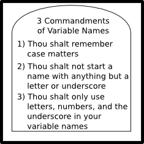
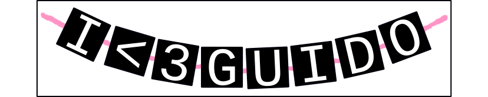

Chapter 2: Variables
I Hate Programming.
I Hate Programming.
I Hate Programming.
It works!
I Love Programming.
-Anon
Variables are like nicknames. Remember when everyone used to call you Stinky Pete? People would say, “Get over here, Stinky Pete!” And everyone miraculously knew that Stinky Pete was you. With variables, you give a nickname to something you use frequently.
- stinky_pete = 'Mr Schmidt'
- print 'Get over here,' stinky_pete
In the above example, stinky_pete is a variable that stores my name. Whenever we want to print out my name, we can just print out stinky_pete.
You can store just about anything at all that you want in a variable. For example, we could create a variable called best_food and set it equal to the string "Spam". We could make another one, called cans_of_spam, and set that equal to the integer 42. We can make as many variables as we want. For some reason, some people seem scared to make another variable, almost like they're afraid they'll run out. I promise you that Python can make trillions of variables before it runs out. So don't be afraid to use another one.
So how do you pick a name for a variable? There's a few simple rules that you simply can't break.
There's also some things that you shouldn't do, since they're impolite. Generally, you should avoid using variable names that don't describe what they contain, such as var1, var2, var3. You also shouldn't use excessively long variable names, like name_of_that_guy_i_met_that_one_time_back_in_the_day_at_the_place; these are just a pain to type. Instead, use names like base, height, and tri_area. You want your variable names to describe what they're going to hold.
You also probably want to avoid variable names that Python already uses for something else. For example, if you were to have a variable called min, how would you know if you were trying to reference the variable min or the min() function, which finds the smallest number in a list? Unless you're programming in a really bad text editor, such as Notepad in Microsoft Windows, Python code probably turns pretty colors when you write it (provided you've saved it with the correct extension). When you type in words that are important to Python, such as reduce, map, and max, they probably turn colors. Don't use those.
And just to add more rules, there's some other words you're not allowed to use because they're super important to Python.
| and | del | from | not | while |
| as | elif | global | or | with |
| assert | else | if | pass | yield |
| break | except | import | ||
| class | exec | in | raise | |
| continue | finally | is | return | |
| def | for | lambda | try |
On the other hand, those are the only really important words to Python. If you know those words, you can create any program in the whole wide world.
There's also some discussion about how you name your variables. Let's say we want to store our favorite type of puppy. Some people would tell you to name your variable favoritePuppy. Others would tell you to store it in favorite_puppy. Others would say to use FavoritePuppy (This is sometimes called CamelCase, due to how it looks). Everyone would agree that you shouldn't store it in favoritepuppy. Python actually has a big long discussion about this, which you should read some time when you want to go to sleep. In essence, they say that you should name your variables in all lower case, using the underscore to separate words.
However, they also say that the most important thing is that you remain consistent. Having half your variables use underscores and half use capitalization makes it very hard to work on your program when you start forgetting how you did things. I'll try my best to follow Python's guidelines.
Different Types of Data
Python comes with a number of different types of data for you to use. Everything you store in a variable must fit one of these types. Don't worry, there's probably a type for what you want to store. In fact, I'm only going to list 4 types, since they cover almost every situation.
Integers store numbers without decimal points. They're sometimes called Whole Numbers, but you can just think of them as the regular old counting numbers, like 0, 1, 2, and 3. In many programming languages, you need to worry about how big an Integer can be. In Python, you don't need to care.
Floats store exponents and decimals. These actually go together, as much as that's hard to believe. Use these to store numbers like 3.14, 1.732, and 42.0. Exponents are stored using e notation. That is, 2x1050 would be stored as 2e50. You can do negative exponents by adding a sign: 2e-50. Whatever you do, don't try to store exponents using the caret. 4^2 might seem like it should be 16, but in Python the ^ symbol actually does a bitwise XOR - the answer becomes 6. If that flew over your head, don't worry about it. Just don't try to use the caret (^) to do exponents.
Booleans store either the value True or the value False. Usually you use them to keep track of if something is True that might some day be False.
Strings store letters and sentences. You need to put them either in single or double quotes. Officially, that's all you need to know. In fact, if you want, just skip on down to below the next illustration. But if you want to know more, keep reading to see the inner workings of Strings.
In a really awesome(ly hard to use) programming language called C Strings are stored as collections of characters. Each letter has a little chunk of the computers memory and then the computer remembers which chunks go together. It's a little bit like this bracelet I made for Guido van Rossum. Each block is a letter, and they're all held together with a bright pink piece of yarn.
As I stated before, there's a bunch of other types of data. If you're an overachiever, you can read ahead at the Python Website.
Assignment
No, I don't mean an assignment that I'm giving you, though perhaps that'd be a good idea. Assignment is the idea of storing something in a variable. Here's an example program.
- our_variable = "Some text"
- our_number = 42
This program stores the string "Some Text" in the variable our_variable, and then stores the number 42 in the variable our_number. That's it. It won't even print anything to screen. It'll just store those variables in memory and then quit.
- a=8
- b=5
- c=a
- b=c
- a=b
This is a litle bit more confusing. What's key here is to remember that a program is nothing more than instructions. The computer will do each line, in order. On line 3, c will have the value 8. On line 4, b will get c's value, which is 8. On line 5, a will get b's value. All three variables will have the value 8.
Mixing Variables and Strings
There's a number of ways you can get print to both output Strings and variables. The easiest is to use the comma.
- fav_animal = "Puppies"
- print "I love", fav_animal
That'll print out
I love Puppies
Which I do. The comma actually does two things. Normally the print statement adds a newline after printing something. That's why this:
- fav_animal = "Puppies"
- print "I love"
- print fav_animal
Will print out:
I love Puppies
The comma switches that newline to a space. It also takes care of switching data between types, so that we don't need to worry about print trying to combine Strings and Integers or Floats.
This website will be taken offline before the end of 2011